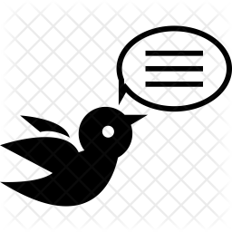
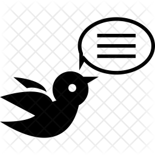

ü•≥
üéÇ
üå¨Ô∏è
üéâ
üç∞
üçª
Mile toh hum 2nd year mei the par abhi toh aur lamba chalna hei
Teri 1st impression toh as a Nerd thi par tere apne hi kuch rangg he aur Voh teri ek saal pehle ki pic toh pura blank kardi thi...
Class mei baate karke bhi cse top karna aur bina social media itta social hona koi tujse sikhe...
Kher topper wali baat rehne dete hei par kisi aur ko ek baari chance dey diya karo
Voh practicals mei tere bina toh fail hin tha
Aur concepts tere bina saare aadhure the
Jaisi bhi ho achi ho ... Bohot chize hei bohot baata chuka hu baaki ka phir kabhi !!
HAPPY 20th BIRTHDAY

This image is enough to say how much we love each other....Love you Ammu ❤